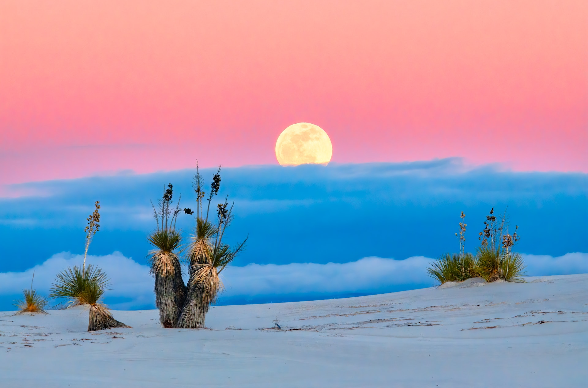
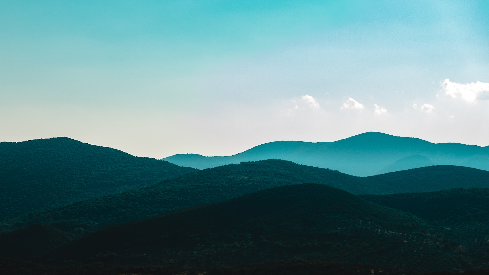
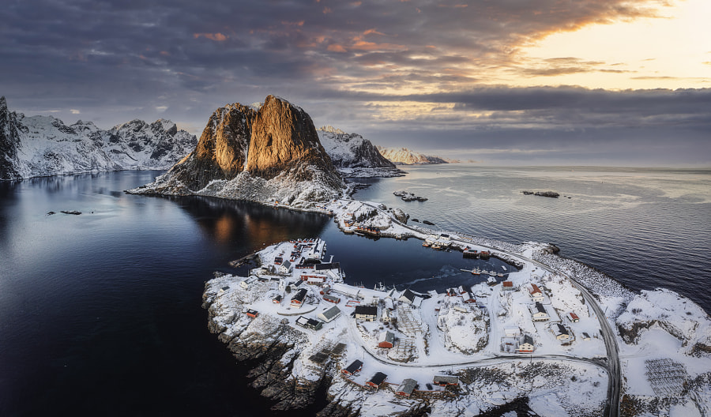
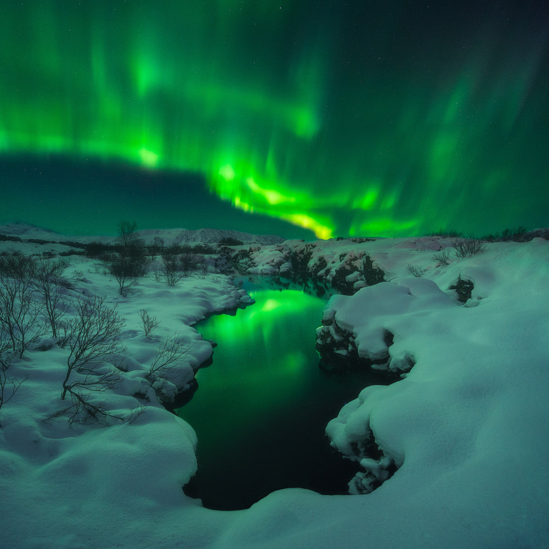
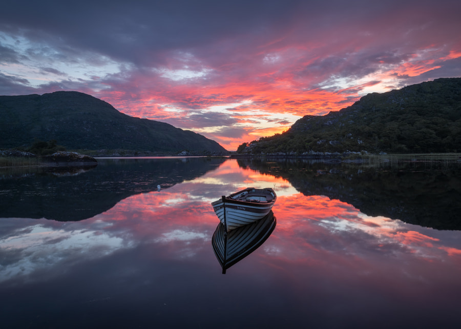
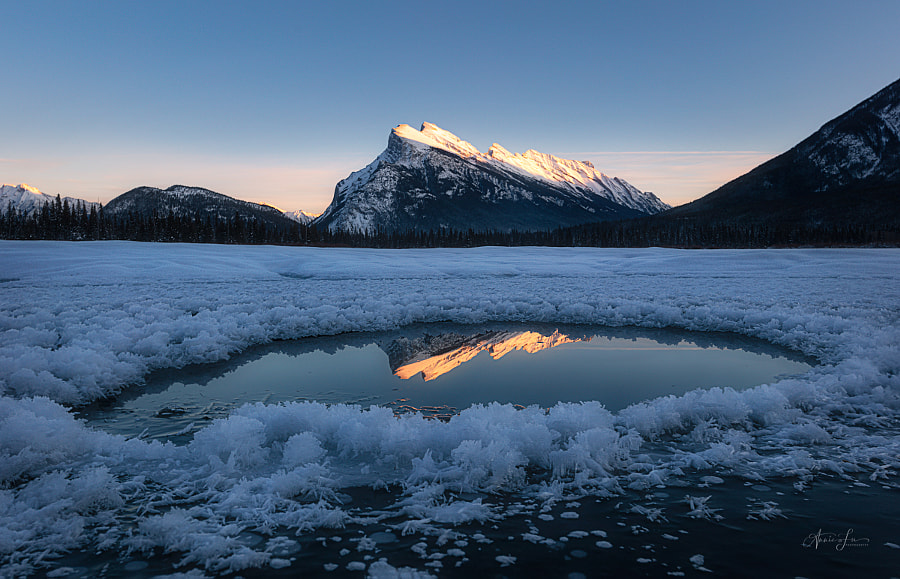
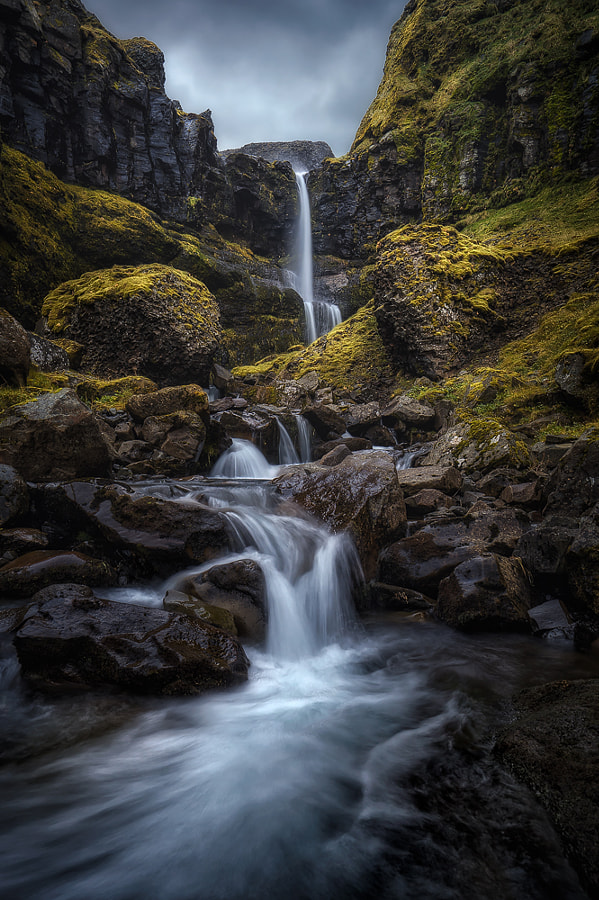
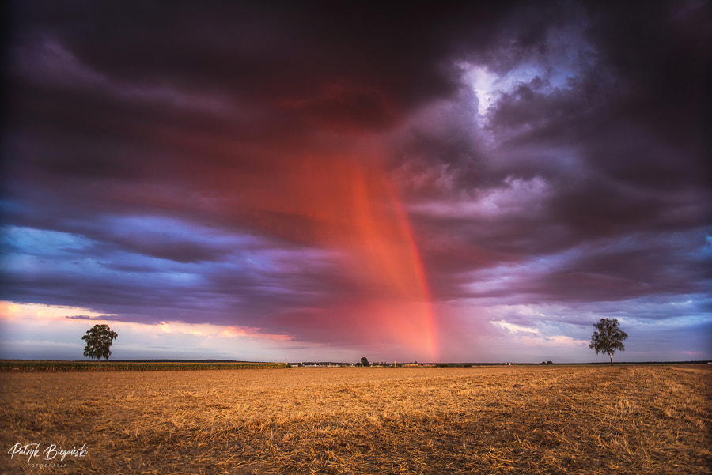

Landscape photography tips
Picture it: Yosemite Valley, 1861. There were no roads yet, but a photographer by the name of Carleton Watkins was there, alone in the vast landscape and surrounded by the sounds of the waterfalls. With him was a custom camera, equipped with a wide-angle lens. His goal was to show the rest of the world the beauty of this pristine wilderness.
Three years later, President Lincoln signed a bill banning development in the area and protecting it for future generations. In the intervening decades, many photographers would follow in Watkins’s footsteps, documenting Yosemite through angles, seasons, and eras he might have only dreamed of. Today, landscape and nature photography are as rich and diverse as ever. Gear is more accessible, and awareness about the importance of conservation has risen. As the genre continues to soar in popularity, we put together this essential guide for landscape photographers, including those just setting out on their own, as Watkins did all those years ago. Whether you’re shooting flowing water in the mountains, misty twilight in the forest, or sunlit sand dunes in the desert—landscape photography is vast and ever-expanding—you can use these tips to your advantage..
Pack light!
While camera equipment has gotten considerably lighter than it once was, you still want to be mindful of how much you’re carrying. Bring too much, and you’ll be in pain and weighed down, which will prevent you from exploring and making the most of your trip. A purpose-built camera backpack can make the process much easier; do your research and try a few on to see what works for you. A camera strap or clip will help you keep your camera accessible when you need it..
With weight in mind, pack only the essential gear. A wide-angle lens is the go-to choice for many landscape photographers, with some opting for a 16-35mm for that larger field of view (Iurie Belegurschi, for instance, is known for his jaw-dropping wide-angle landscapes, many of which were made with a 16-35mm). Instead of packing multiple primes, go for a zoom.
Incorporate reflections
Reflections open up the possibility of mixing things up and seeing a familiar scene differently. They can also reinforce your composition: in Annie Fu’s photograph of a frost flower-covered pond (below), the reflection of the very tip of a sunlit Mount Rundle—like a downward-facing arrow—just barely touches the bottom horizontal third’s line, making for a subtle but enchanting scene.
Dramatic skies, especially around sunrise or sunset with intriguing cloud formations, also lend themselves well to reflections. Just beware of windy days; calm mornings tend to work best for smooth reflections.
Embrace all weather conditions
As long as you’re being safe and keeping your gear safe (and bringing microfiber cloths for your lens), there’s no rule that says you have to wait for perfect blue skies. By getting out there in rain, fog, mist, and snow, you’ll learn to overcome challenges and adapt to the landscape, while seeing it in a new light every time you visit. Waterfalls, in particular, can be spectacular in the rain, as the photographer Jens Ober discovered while exploring Iceland on “dull” and cloudy days.
Another benefit of storms, particularly in springtime, is the possibility of rainbows. Consider placing your horizon line slightly lower than you normally might to capture the majesty of the sky, as Patryk Bieganski did on a stormy summer’s day in Poland.
